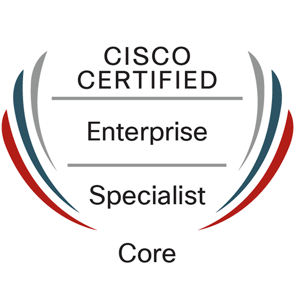
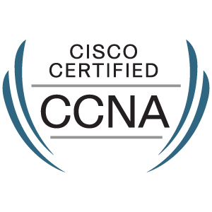
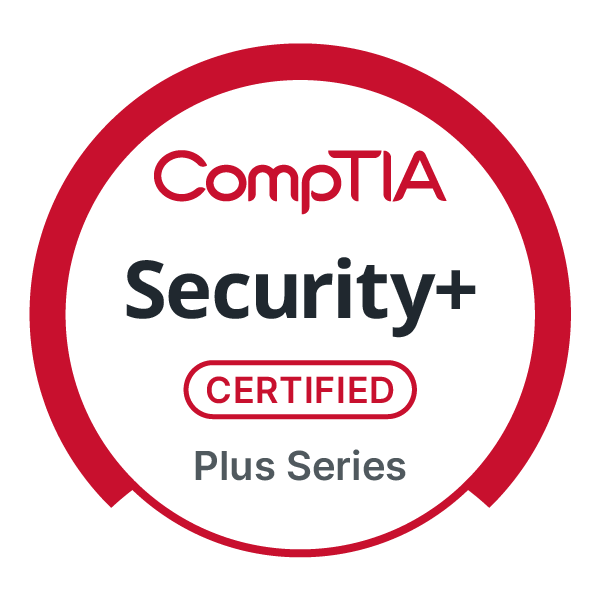
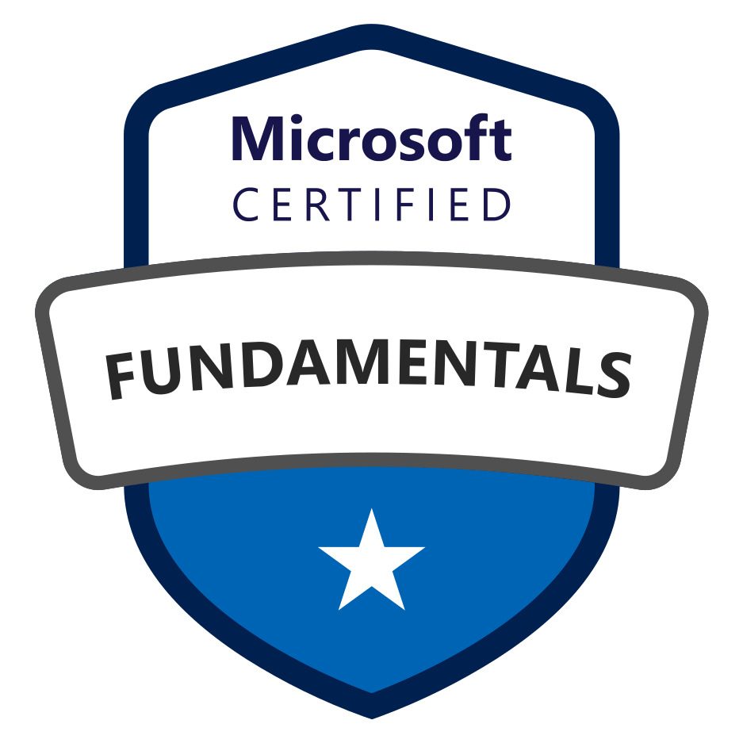
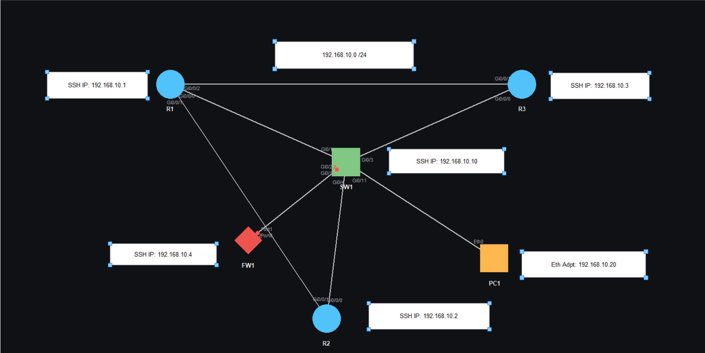
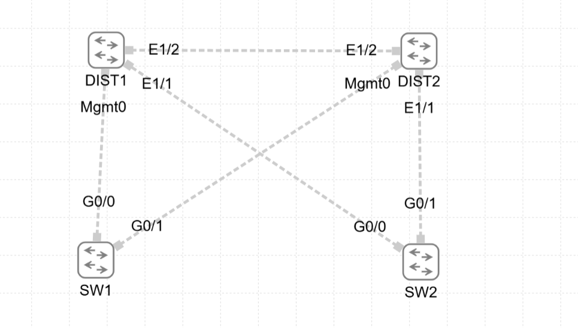
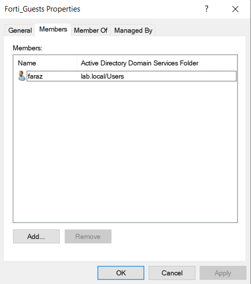

Cisco Certified Specialist - Enterprise Core
Cisco · Certified September 1, 2026
Valid through September 1, 2029
Cisco ID: CSCO14638933
New York, NY · Open to full-time and contract roles
Network Engineering | Network Operations
Cisco Certified Specialist (ENCOR) and CCNA certified, with 30 completed field engineering contracts ranging from router and switch troubleshooting and rack-and-stack work to industrial camera installations in Amazon warehouses.
Verified credentials
Current credentials supporting network deployment, Network Operations, NOC, and infrastructure roles.

Cisco · Certified September 1, 2026
Valid through September 1, 2029
Cisco ID: CSCO14638933

Cisco · Valid through September 2027
Fortinet · Achieved June 18, 2026
Valid through June 18, 2028
Validation no.: 1459723845SA

CompTIA · Valid through September 2028

Microsoft · Foundational cloud concepts and Azure services
Documented engineering work
Each lab is written as an employer-facing technical report: objective, topology, configuration choices, verification evidence, and practical interpretation.

Physical lab · Packet analysis
A first-principles analysis of same-subnet communication, ARP request and reply behavior, Ethernet framing, and how routers interpret raw packet fields.

Physical lab · Secure management
Device recovery, management-IP planning, secure remote-access configuration, and troubleshooting of an IP-conflict condition that redirected SSH traffic.

CML lab · Campus design
A four-switch campus block demonstrating root-bridge election, forwarding and alternate roles, blocked paths, and convergence after active-uplink loss.

VMware lab · Identity infrastructure
A Windows 11 domain-client recovery case separating Layer 3 reachability from DNS-driven AD discovery, stale machine-account state, and token validation.
Networking + Python + automation
A personal Python network-visualization tool designed for fast keyboard-driven diagrams. TopoDrawer supports rapid modeling of routers, switches, links, node movement, selection, pan, zoom, and connected-node navigation.
TopoDrawer walkthrough
Watch TopoDrawer scale from a minimal network sketch into a larger structured topology.
Field work
A carousel of images from a wide range of areas I've worked in.
Writing
Loading posts...
Contact